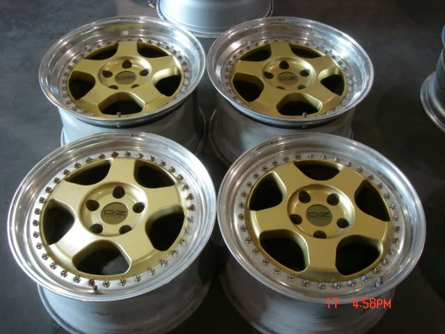

-
all four wheels 17x9 24mm offset but
The wheels in the pics are 17x8.5 45mm offset and 17x10 45mm offset
Shiro #443

-
Good.
-
Depends on size but I like the style.1987 N/A-to-Turbo
VG33ET
Holset WH1C
Stance Coils

viewtopic.php?f=13&t=15468 -
They look like 16"x9.5 ET 35+. Hard to tell. -
The wheels in the pics are 17x8.5 45mm offset and 17x10 45mm offset
http://www.rbwheels.com/index.php?main_ … ts_id=1996
but somewhere else they're selling four of the same wheel in
17x9 24mm offset for less
I'll go with these betterShiro #443
-
You are going to need a 1"-1.5" Spacer in the rear just to get them to fit.
.5"-1" in the front. -
They're a direct fit on an 88 Z31(17x9 24mm offset). Maybe a small spacer on the back wheels to make it flush with the edge of the 1/4 panelShiro #443
-
I was referring to these.Rick88ss wrote: The wheels in the pics are 17x8.5 45mm offset and 17x10 45mm offset
The others set would be the best bet, obviously. -
when considering size, compare to people with 2003 cobra wheels. they are a 17x9 et27Nearly all men can stand adversity, but if you want to test a mans character make him a moderator. -
Will need at least a 15mm spacer. IMO a 20-25mm spacer would be best.Rick88ss wrote: all four wheels 17x9 24mm offset Shiro Special # 981 Being assembled in my spare time Chromoly acquired!
Shiro Special # 981 Being assembled in my spare time Chromoly acquired!
Originally posted by BoostedMamma -
Would look a lot better with some more lip. -
[quote]Racinjitter wrote:I'm sure I'll put some spacers in the back. What's a good place to get some? Do I also need longer wheel studs?Originally posted by Rick88ssShiro #443
-
You could get hub centric adapters. They bolt on to the hub and have threaded bolts for the wheels.
As an alternative to getting longer studs. I used Airwolfe racing on eBay. You can contact them for custom sizes and specifications. About $125 a set (2) shipped. -
+1300cars wrote: Would look a lot better with some more lip.1987 N/A-to-Turbo
VG33ET
Holset WH1C
Stance Coils
viewtopic.php?f=13&t=15468 -
Reminds me of work meisters. There is a pic of a black zenki with gold meisters on them floating around somewhere. Go for it, they should look awesome. I am also looking for some gold with a polished lip for the SS.86na - BlueZ
Shiro #366 - Kouki Monster
85t - Mr Tickles

Copyright © 2006–. All rights reserved. Privacy Policy